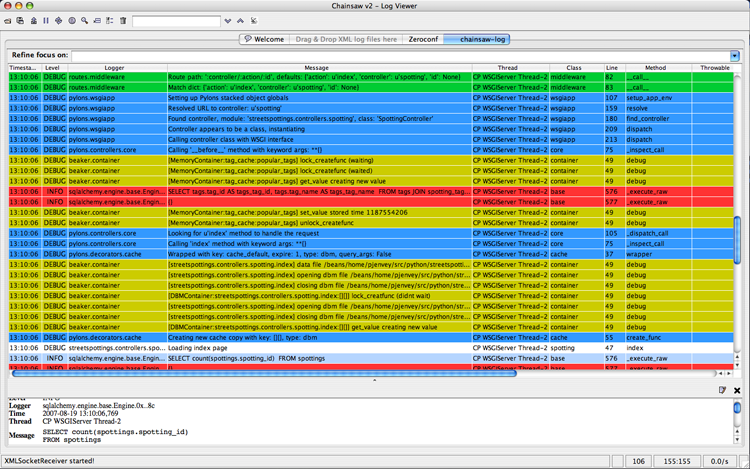

Logging¶
Logging messages¶
As of Pylons 0.9.6, Pylons controllers (created via paster
controller/restcontroller) and websetup.py create their own Logger objects
via Python’s logging module.
For example, in the helloworld project’s hello controller
(helloworld/controllers/hello.py):
import logging
from pylons import request, response, session, tmpl_context as c, url
from pylons.controllers.util import abort, redirect
log = logging.getLogger(__name__)
class HelloController(BaseController):
def index(self):
...
Python’s special __name__ variable refers to the current module’s fully
qualified name; in this case, helloworld.controllers.hello.
To log messages, simply use methods available on that Logger object:
import logging
from pylons import request, response, session, tmpl_context as c, url
from pylons.controllers.util import abort, redirect
log = logging.getLogger(__name__)
class HelloController(BaseController):
def index(self):
content_type = 'text/plain'
content = 'Hello World!'
log.debug('Returning: %s (content-type: %s)', content, content_type)
response.content_type = content_type
return content
Which will result in the following printed to the console, on stderr:
16:20:20,440 DEBUG [helloworld.controllers.hello] Returning: Hello World!
(content-type: text/plain)
Basic Logging configuration¶
As of Pylons 0.9.6, the default ini files include a basic configuration for the logging module. Paste ini files use the Python standard ConfigParser format; the same format used for the Python logging module’s Configuration file format.
paster, when loading an application via the paster serve, shell
or setup-app commands, calls the logging.fileConfig function on that specified ini
file if it contains a ‘loggers’ entry. logging.fileConfig reads the logging
configuration from a ConfigParser file.
Logging configuration is provided in both the default development.ini and
the production ini file (created via paster make-config <package_name>
<ini_file>). The production ini’s logging setup is a little simpler than the
development.ini‘s, and is as follows:
# Logging configuration
[loggers]
keys = root
[handlers]
keys = console
[formatters]
keys = generic
[logger_root]
level = INFO
handlers = console
[handler_console]
class = StreamHandler
args = (sys.stderr,)
level = NOTSET
formatter = generic
[formatter_generic]
format = %(asctime)s %(levelname)-5.5s [%(name)s] [%(threadName)s] %(message)s
One root Logger is created that logs only messages at a level above or equal to
the INFO level to stderr, with the following format:
2007-08-17 15:04:08,704 INFO [helloworld.controllers.hello] Loading resource, id: 86
For those familiar with the logging.basicConfig function, this configuration
is equivalent to the code:
logging.basicConfig(level=logging.INFO,
format='%(asctime)s %(levelname)-5.5s [%(name)s] %(message)s')
The default development.ini‘s logging section has a couple of differences:
it uses a less verbose timestamp, and defaults your application’s log messages
to the DEBUG level (described in the next section).
Pylons and many other libraries (such as Beaker, SQLAlchemy, Paste) log a number
of messages for debugging purposes. Switching the root Logger level to DEBUG
reveals them:
[logger_root]
#level = INFO
level = DEBUG
handlers = console
Filtering log messages¶
Often there’s too much log output to sift through, such as when switching
the root Logger’s level to DEBUG.
An example: you’re diagnosing database connection issues in your application and
only want to see SQLAlchemy’s DEBUG messages in relation to database
connection pooling. You can leave the root Logger’s level at the less verbose
INFO level and set that particular SQLAlchemy Logger to DEBUG on its
own, apart from the root Logger:
[logger_sqlalchemy.pool]
level = DEBUG
handlers =
qualname = sqlalchemy.pool
then add it to the list of Loggers:
[loggers]
keys = root, sqlalchemy.pool
No Handlers need to be configured for this Logger as by default non root Loggers will propagate their log records up to their parent Logger’s Handlers. The root Logger is the top level parent of all Loggers.
This technique is used in the default development.ini. The root Logger’s
level is set to INFO, whereas the application’s log level is set to
DEBUG:
# Logging configuration
[loggers]
keys = root, helloworld
[logger_helloworld]
level = DEBUG
handlers =
qualname = helloworld
All of the child Loggers of the helloworld Logger will inherit the DEBUG
level unless they’re explicitly set differently. Meaning the
helloworld.controllers.hello, helloworld.websetup (and all your app’s
modules’) Loggers by default have an effective level of DEBUG too.
For more advanced filtering, the logging module provides a Filter object; however it cannot be used directly from the configuration file.
Advanced Configuration¶
To capture log output to a separate file, use a FileHandler (or a RotatingFileHandler):
[handler_accesslog]
class = FileHandler
args = ('access.log','a')
level = INFO
formatter = generic
Before it’s recognized, it needs to be added to the list of Handlers:
[handlers]
keys = console, accesslog
and finally utilized by a Logger.
[logger_root]
level = INFO
handlers = console, accesslog
These final 3 lines of configuration directs all of the root Logger’s output to the access.log as well as the console; we’ll want to disable this for the next section.
Request logging with Paste’s TransLogger¶
Paste provides the TransLogger middleware for logging
requests using the Apache Combined Log Format. TransLogger combined
with a FileHandler can be used to create an access.log file similar to
Apache’s.
Like any standard middleware with a Paste entry point, TransLogger can be
configured to wrap your application in the [app:main] section of the ini
file:
filter-with = translogger
[filter:translogger]
use = egg:Paste#translogger
setup_console_handler = False
This is equivalent to wrapping your app in a TransLogger instance via the bottom
of your project’s config/middleware.py file:
from paste.translogger import TransLogger
app = TransLogger(app, setup_console_handler=False)
return app
TransLogger will automatically setup a logging Handler to the console when
called with no arguments, so it ‘just works’ in environments that don’t
configure logging. Since we’ve configured our own logging Handlers, we need to
disable that option via setup_console_handler = False.
With the filter in place, TransLogger’s Logger (named the ‘wsgi’ Logger) will propagate its log messages to the parent Logger (the root Logger), sending its output to the console when we request a page:
00:50:53,694 INFO [helloworld.controllers.hello] Returning: Hello World!
(content-type: text/plain)
00:50:53,695 INFO [wsgi] 192.168.1.111 - - [11/Aug/2007:20:09:33 -0700] "GET /hello
HTTP/1.1" 404 - "-"
"Mozilla/5.0 (Macintosh; U; Intel Mac OS X; en-US; rv:1.8.1.6) Gecko/20070725
Firefox/2.0.0.6"
To direct TransLogger to the access.log FileHandler defined above, we need
to add that FileHandler to the wsgi Logger’s list of Handlers:
# Logging configuration
[loggers]
keys = root, wsgi
[logger_wsgi]
level = INFO
handlers = handler_accesslog
qualname = wsgi
propagate = 0
As mentioned above, non-root Loggers by default propagate their log Records to
the root Logger’s Handlers (currently the console Handler). Setting
propagate to 0 (false) here disables this; so the wsgi Logger directs
its records only to the accesslog Handler.
Finally, there’s no need to use the generic Formatter with TransLogger as
TransLogger itself provides all the information we need. We’ll use a Formatter
that passes-through the log messages as is:
[formatters]
keys = generic, accesslog
[formatter_accesslog]
format = %(message)s
Then wire this new accesslog Formatter into the FileHandler:
[handler_accesslog]
class = FileHandler
args = ('access.log','a')
level = INFO
formatter = accesslog
Logging to wsgi.errors¶
Pylons provides a custom logging Handler class, pylons.log.WSGIErrorsHandler, for
logging output to environ['wsgi.errors']: the WSGI server’s error stream
(see the WSGI Spefification, PEP 333 for more
information). wsgi.errors can be useful to log to in certain situations,
such as when deployed under Apache mod_wsgi/mod_python, where the
wsgi.errors stream is the Apache error log.
To configure logging of only ERROR (and CRITICAL) messages to
wsgi.errors, add the following to the ini file:
[handlers]
keys = console, wsgierrors
[handler_wsgierrors]
class = pylons.log.WSGIErrorsHandler
args = ()
level = ERROR
format = generic
then add the new Handler name to the list of Handlers used by the root Logger:
[logger_root]
level = INFO
handlers = console, wsgierrors
Warning
WSGIErrorsHandler does not receive log messages created during
application startup. This is due to the wsgi.errors stream only being
available through the environ dictionary; which isn’t available until a
request is made.
Lumberjacking with log4j’s Chainsaw¶
Java’s log4j project provides the Java GUI application Chainsaw for viewing and managing
log messages. Among its features are the ability to filter log messages on the
fly, and customizable color highlighting of log messages.
We can configure Python’s logging module to output to a format parsable by
Chainsaw, log4j‘s XMLLayout
format.
To do so, we first need to install the Python XMLLayout package:
$ easy_install XMLLayout
It provides a log Formatter that generates XMLLayout XML. It also provides
RawSocketHandler; like the logging module’s SocketHandler, it sends log
messages across the network, but does not pickle them.
The following is an example configuration for sending XMLLayout log messages
across the network to Chainsaw, if it were listening on localhost port 4448:
[handlers]
keys = console, chainsaw
[formatters]
keys = generic, xmllayout
[logger_root]
level = INFO
handlers = console, chainsaw
[handler_chainsaw]
class = xmllayout.RawSocketHandler
args = ('localhost', 4448)
level = NOTSET
formatter = xmllayout
[formatter_xmllayout]
class = xmllayout.XMLLayout
This configures any log messages handled by the root Logger to also be sent to
Chainsaw. The default development.ini configures the root Logger to the
INFO level, however in the case of using Chainsaw, it is preferable to
configure the root Logger to NOTSET so all log messages are sent to
Chainsaw. Instead, we can restrict the console handler to the INFO level:
[logger_root]
level = NOTSET
handlers = console
[handler_console]
class = StreamHandler
args = (sys.stderr,)
level = INFO
formatter = generic
Chainsaw can be downloaded from its home page, but can also be launched directly from a Java-enabled browser via the link: Chainsaw web start.
It can be configured from the GUI, but it also supports reading its
configuration from a log4j.xml file.
The following log4j.xml file configures Chainsaw to listen on port 4448
for XMLLayout style log messages. It also hides Chainsaw’s own logging
messages under the WARN level, so only your app’s log messages are
displayed:
<?xml version="1.0" encoding="UTF-8" ?>
<!DOCTYPE configuration>
<configuration xmlns="http://logging.apache.org/">
<plugin name="XMLSocketReceiver" class="org.apache.log4j.net.XMLSocketReceiver">
<param name="decoder" value="org.apache.log4j.xml.XMLDecoder"/>
<param name="port" value="4448"/>
</plugin>
<logger name="org.apache.log4j">
<level value="warn"/>
</logger>
<root>
<level value="debug"/>
</root>
</configuration>
Chainsaw will prompt for a configuration file upon startup. The configuration can also be loaded later by clicking File/Load Log4J File.... You should see an XMLSocketReceiver instance loaded in Chainsaw’s Receiver list, configured at port 4448, ready to receive log messages.
Here’s how the Pylons stack’s log messages can look with colors defined (using Chainsaw on OS X):
{kind=link}
Alternate Logging Configuration style¶
Pylons’ default ini files include a basic configuration for Python’s logging
module. Its format matches the standard Python logging module’s config file format . If a
more concise format is preferred, here is Max Ischenko’s demonstration of
an alternative style to setup logging.
The following function is called at the application start up (e.g. Global ctor):
def setup_logging():
logfile = config['logfile']
if logfile == 'STDOUT': # special value, used for unit testing
logging.basicConfig(stream=sys.stdout, level=logging.DEBUG,
#format='%(name)s %(levelname)s %(message)s',
#format='%(asctime)s,%(msecs)d %(levelname)s %(message)s',
format='%(asctime)s,%(msecs)d %(name)s %(levelname)s %(message)s',
datefmt='%H:%M:%S')
else:
logdir = os.path.dirname(os.path.abspath(logfile))
if not os.path.exists(logdir):
os.makedirs(logdir)
logging.basicConfig(filename=logfile, mode='at+',
level=logging.DEBUG,
format='%(asctime)s,%(msecs)d %(name)s %(levelname)s %(message)s',
datefmt='%Y-%b-%d %H:%M:%S')
setup_thirdparty_logging()
The setup_thirdparty_logging function searches through the certain keys of the
application .ini file which specify logging level for a particular logger
(module).
def setup_thirdparty_logging():
for key in config:
if not key.endswith('logging'):
continue
value = config.get(key)
key = key.rstrip('.logging')
loglevel = logging.getLevelName(value)
log.info('Set %s logging for %s', logging.getLevelName(loglevel), key)
logging.getLogger(key).setLevel(loglevel)
Relevant section of the .ini file (example):
sqlalchemy.logging = WARNING
sqlalchemy.orm.unitofwork.logging = INFO
sqlalchemy.engine.logging = DEBUG
sqlalchemy.orm.logging = INFO
routes.logging = WARNING
This means that routes logger (and all sub-loggers such as routes.mapper) only passes through messages of at least WARNING level; sqlalachemy defaults to WARNING level but some loggers are configured with more verbose level to aid debugging.